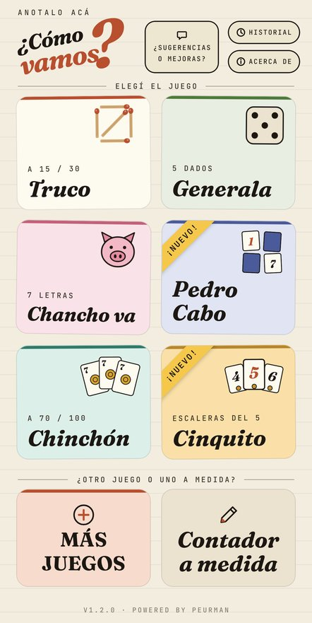
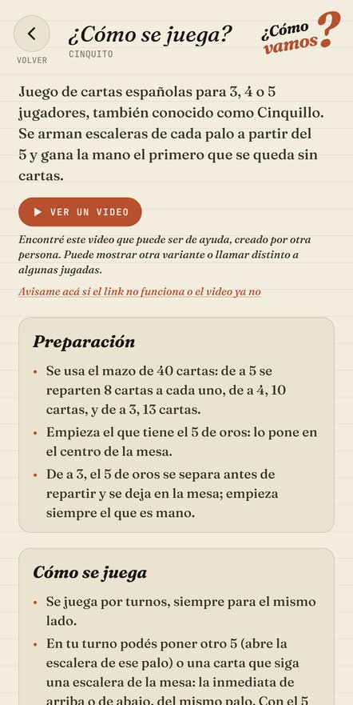
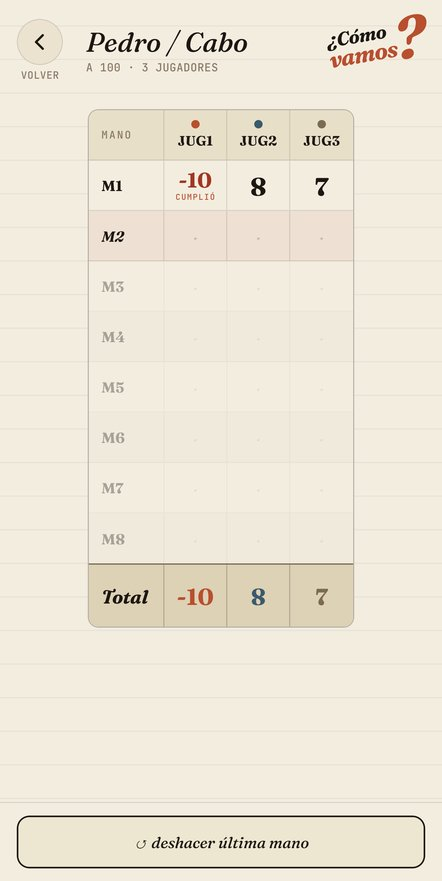
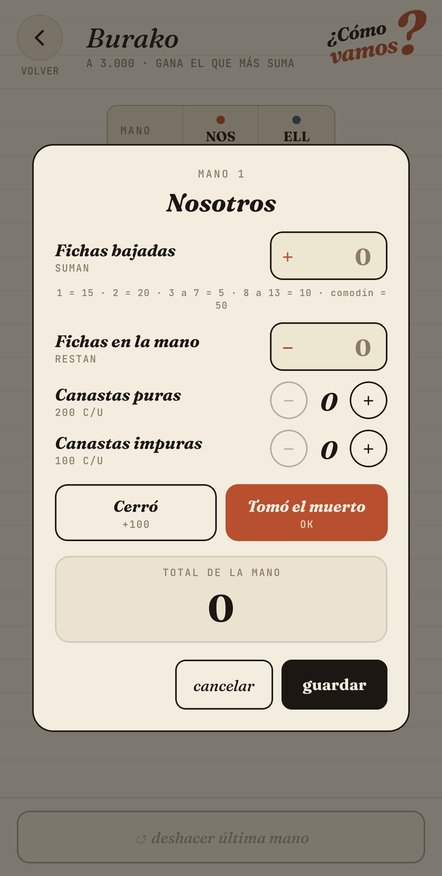
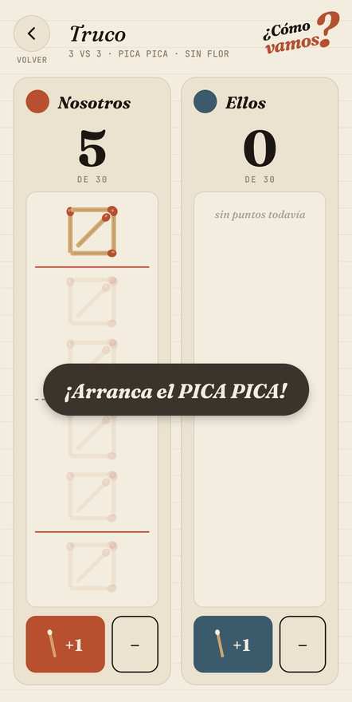
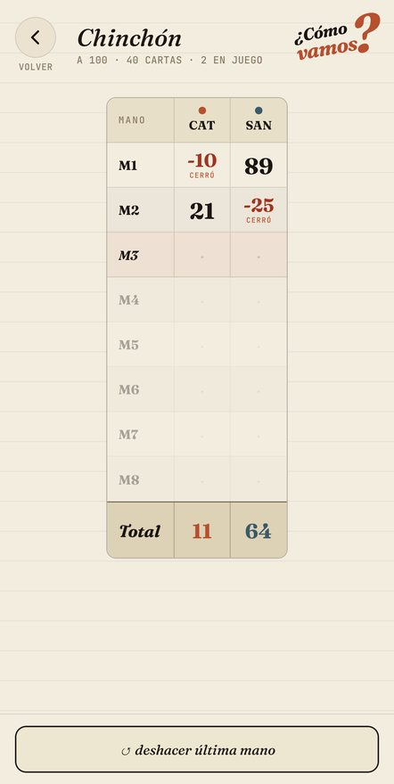
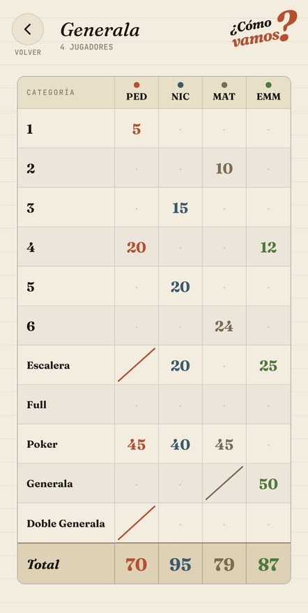
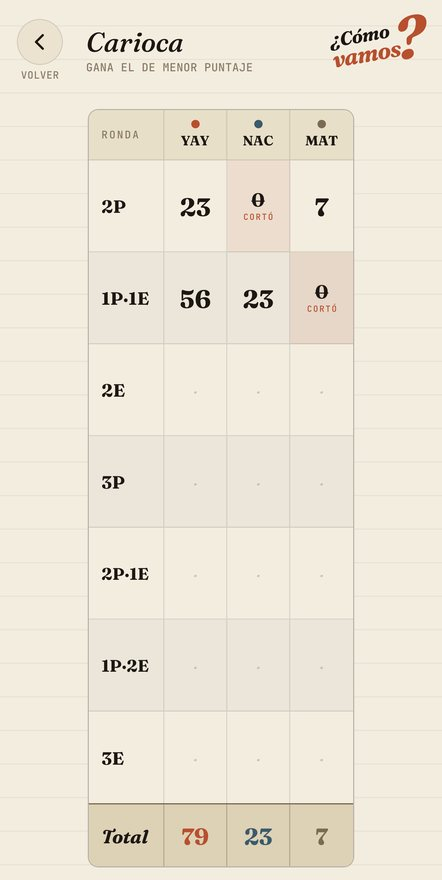
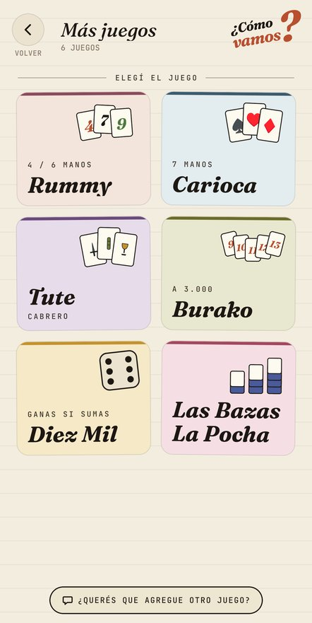

¿Cómo vamos?
anotalo acá
El anotador para las tardes de mate, playa y mesas de bar. Truco, Generala, Chinchón, Pedro, Cinquito y más — sin papel ni lapicera. Y si no te acordás las reglas, te las explica.
Gratis · sin registro · sin publicidad · funciona sin internet









deslizá para ver más →
Novedades versión 1.2
- ¿Cómo se juega?: las reglas de cada juego y un video para aprenderlo.
- Juegos nuevos: Pedro / Cabo y Cinquito.
- Burako con su propio anotador: fichas, canastas puras e impuras, cierre y muerto.
- Nuevos nombres: Chancho va, Rummy y Las Bazas / La Pocha.
- Diez Mil: los puntos vuelan hasta el total al sumar.
- ¿Falta tu juego? Pedilo desde la app, en "¿Sugerencias o mejoras?" (es anónimo).
Los juegos
- TrucoFósforos, a 15 o 30, con o sin flor, hasta 3 contra 3
- GeneralaTodas las categorías, con servida
- Chancho vaC·H·A·N·C·H·O: elegís quién perdió la mano
- Pedro / CaboGana el que menos suma; cantar Pedro resta o suma
- ChinchónA 70 o 100, con reenganche y cierres
- CinquitoCorta y resta 10; a 100 quedás afuera
- Rummy4 o 6 manos, gana el que menos suma
- CariocaLas 7 manos, con "cortó"
- Tute cabreroT·U·T·E y último en pie
- BurakoCanastas, cierre y muerto; a 3.000
- Diez MilAcumulador con botones rápidos
- Las Bazas / La PochaDe 1 carta al máximo y de vuelta a 1
- A medidaArmá tu propio contador
- Rummy, Carioca, Tute, Burako, Diez Mil y Las Bazas están en la sección "Más juegos" de la app. Cada juego tiene su "¿Cómo se juega?".